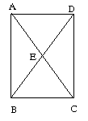

Polygons and Triangulation
Idea:
In this section we discuss some basic ideas useful in designing on-screen objects..
Polygon DesignTriangulation of Surfaces
A valid triangulation of a figure X is a collection of triangles satisfying the following 2 conditions:
(1) The collection together exactly covers X.
(2) Two triangles in the collection are either
(a) disjoint (ie., do not intersect at all), or
(b) intersect exactly in a vertex of both, or
(c) intersect exactly in a side of both.
The 2 triangles BCD and DAB give a valid triangulation of the rectangle ABCD.
The 3 triangles ABC, ADE, and CDE do not give a valid triangulation of ABCD as ABC intersects ADE in AE, which is a side of ADE but *not* of ABC (it's just *part* of the side AC).

In other words, an implication of condition (2) above is that if a vertex of one triangle lies on another then it *must* also be a vertex of that triangle. The 2 triangles ABD and ACD do not form a valid triangulation of the *pentagon* ABECD as they intersect in a triangle AED which is, of course, neither a side nor vertex of either. However, triangles ABE, ADE, and DEC do form a valid triangulation of the pentagon.

Note: The vertices of the triangles in a triangulation do not all have to come from the vertices of the figure being triangulated. Extra vertices can be introduced (called Steiner vertices). Eg, AED, DEC,BEC, and ABE give a triangulation of ABCD with a Steiner vertex E.

Steiner vertices are not necessary, but, nevertheless, are often introduced to improve the "quality" of a triangulation (one popular measure of quality is the minimum of the angles in the triangles - the larger this is the better; in other words skinny triangles with small angles are undesirable).